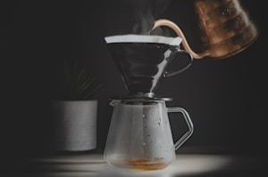

En Café Aroma ofrecemos una experiencia única en cada taza. Nuestro menú combina granos seleccionados de distintas regiones del Perú con recetas artesanales, logrando aromas y sabores que deleitan los sentidos.
Desde el clásico espresso hasta el latte vainilla o el té chai, cada bebida es preparada por baristas apasionados que buscan brindarte un momento de pausa, calidez y buena conversación.

Disfruta de nuestra amplia variedad de cafés, tés y postres artesanales. Trabajamos con insumos frescos, orgánicos y de origen sostenible. Nuestros productos son elaborados cada mañana para garantizar su sabor y textura perfectos.
También puedes acompañar tu bebida con deliciosos croissants, brownies y tartas caseras. Si deseas conocer más sobre nuestro proceso de tostado o reservas en nuestro local, contáctanos directamente.
Complete todos los datos para reservar su mesa o solicitar más información